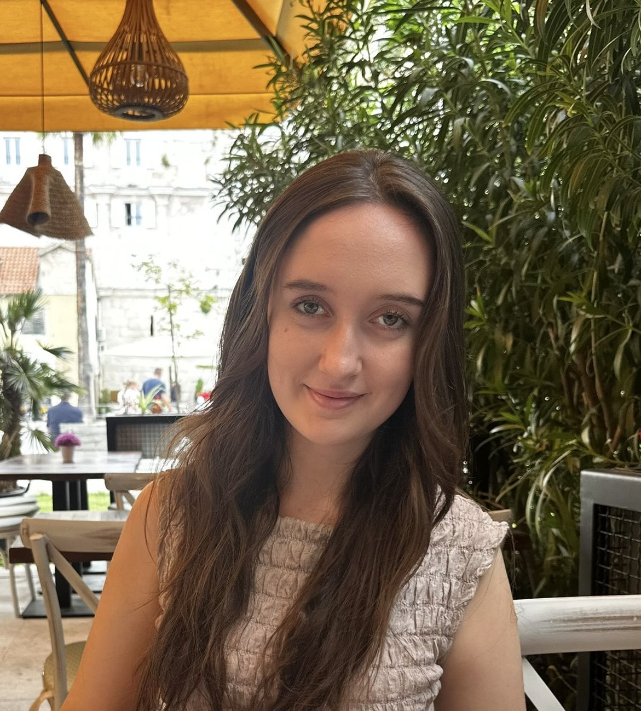
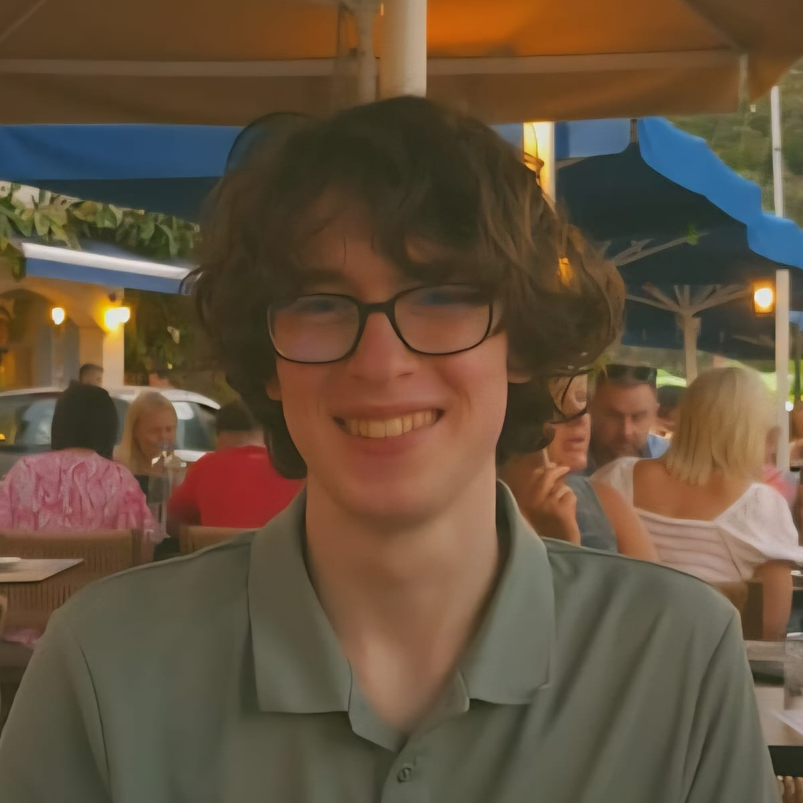
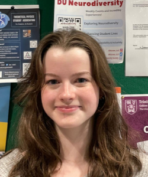
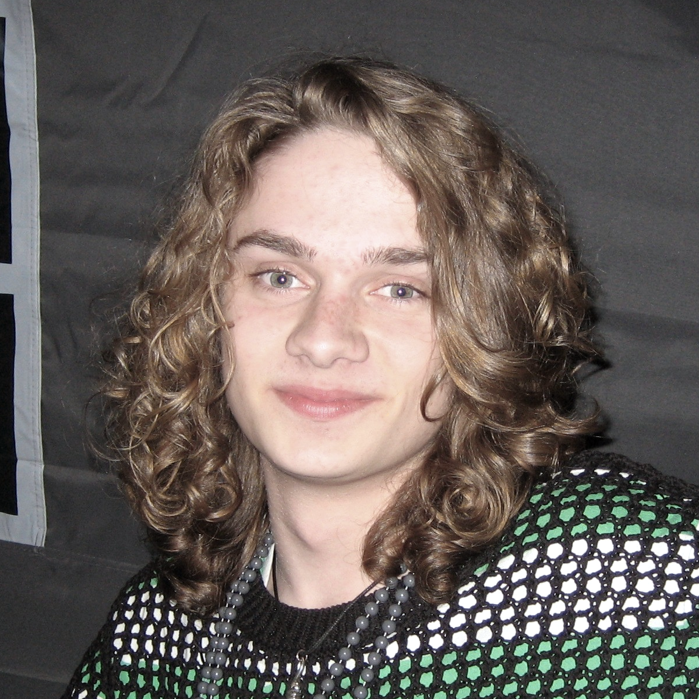
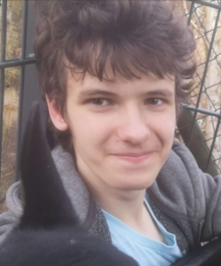

Caoimhe Burke
Auditor
The auditor is required to lead committee meetings, make sure everyone else is fulfilling their roles and ensure the smooth and successful running of TPSA. The auditor come ups with both short and long term plans for TPSA to achieve its goals locally, in student based projects, and on a larger scale, in improving the physics ecosystem in Ireland.

Ella Southgate
Secretary
The Secretary shall be responsible for ensuring that meetings are organised and documented appropriately. Emails notifying members of all TPSA events are written and sent by the secretary.

Liam Duggan
Treasurer
The Treasurer shall be responsible for the financial management of the association. This entails drafting a budget for the association's income and expenditure for the year and updating it as needs be, working with other committee members whenever they are in need of funding. The Treasurer shall also search for funding from companies, organisations, grant providers, college departments, etc, in collaboration with the Auditor.

Eden Penfold
Public Relations Coordinator
The PRC shall be the head of the Public Relations subcommittee. They shall be responsible for delegating tasks relating to all online communication channels, excluding email, including but not limited to Instagram, LinkedIn and Discord particularly ensuring all our talks are announced via Instagram. They shall be responsible for expanding our methods of online communication, including Instagram reels and Youtube shorts, in collaboration with the Video Coordinator.

Cian Gregg
Webmaster
The Webmaster is responsible for maintaining and updating the TPSA website. They shall ensure the website is up to date and shall post updates on current events to showcase the association's activities to external audiences.

Amy Shannon
Video Coordinator
The video coordinator shall be the head of the Video subcommittee. They are responsible for delegating tasks relating to the TPSA YouTube channel, including recording and editing TPSA-organised talks and overseeing the recruitment, recording, editing, and publication of student-run lecture series. They shall be responsible for expanding our methods of online communication, including Youtube shorts, in collaboration with the PRC.
Vilmos Palik
PLANCKS Captain
This person will put together a team of excellent problem solvers and train them to be ready for the PLANCKS competition. They shall coordinate training sessions and arrange transport to the competition.

Artem Tarasenko
External Liaison
The External Liaison shall represent the IOP within the TPSA, including applying for annual funding from the IOP, receiving emails from the IOP, and forwarding pertinent information to the committee. They shall ensure that TPSA meets the funding criteria and addresses any related issues. The External Liaison shall also work to engage the college community and wider society with theoretical physics. They shall manage communications with TPSA representatives in other universities and work to widen the reach of TPSA.
First Year Rep
The purpose of the First-Year Representative is dynamic and subject to change given the year and wishes of the present committee. Fundamentally, the purpose of the First-Year Representative is to ensure the First-Year students ample access and attendance to TPSA events particularly seminars.
Maths Rep
The Mathematics Rep shall be elected from the respective student body. These representatives shall communicate pertinent information to their respective courses and represent their courses in committee meetings. They shall also assist in organising events, especially ones related to their course.
Physics Rep
The Physics Rep shall be elected from the respective student body. These representatives shall communicate pertinent information to their respective courses and represent their courses in committee meetings. They shall also assist in organising events, especially ones related to their course.
Postgrad Rep
The Postgraduate Representative shall be elected from the respective student body. This representative shall communicate relevant information to postgraduate students, represent postgraduate interests in committee meetings, and encourage further participation among the postgraduate student body, acting as a link between the committee and the postgraduate students.